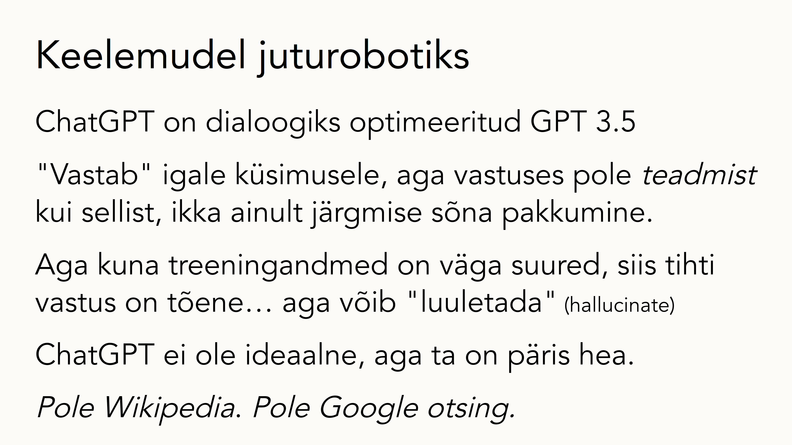
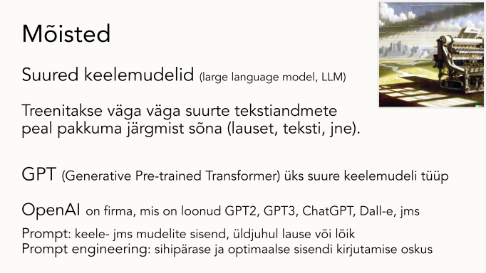
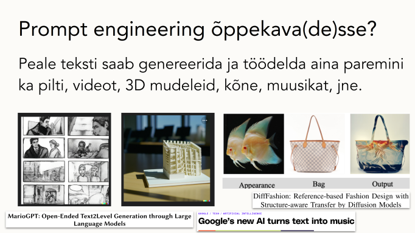
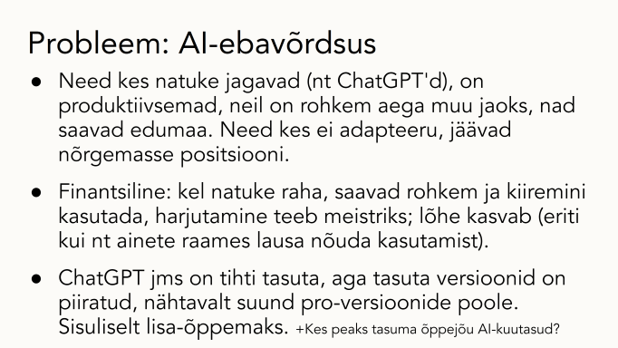
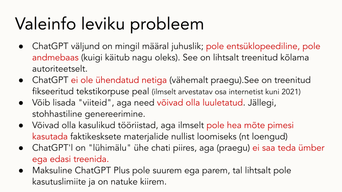

ChatGPT ja uued tekstigeneraatorid
Koolituse tagasiside raport ja küsimustik
Andres Karjus (Tallinna Ülikool / Datafigure OÜ)
27.02.2023
[English version here]
TLÜ töötaja: enne raporti lugemust palume täita väikse anonüümse küsimustiku. Ainult 7 valikvastus-küsimust, ~3‑4 minutit, aga tulemustest saame aimu, kus ülikoolipere praegu nendes küsimustes seisab: LINK
(see on erinev koolituse ideekorjest; palume täita ka seal osalenutel)
Ülevaade
13-22.02.2023 toimus Tallinna Ülikoolis kolm koolitust (2 eesti, 1 inglise keeles) generatiivse tehisintellekti ja ChatGPT teemal. Tegemist on aina suuremat kõlapinda leidvate tehnoloogiatega (vt ka meedialinke allpool), ja seda heal põhjusel, kuna muutused mida nende võimekus kaasa toob, on vaieldamatult suured. Koolitusest võttis osa kokku 127 ülikooli töötajat. Selle käigus andis koolitaja ülevaate generatiivse tehisintellekti rakendustest, fookusega tekstigeneraatoritel nagu ChatGPT, mille võimekust katsetati ka sealsamas klassiruumis.



Koolituse teises pooles toimusid probleemikesksed arutelud väikestes rühmades ning lõpus kokkuvõttev ühine diskussioon. Välja pakutud 13 küsimusele vastuste leidmiseks moodustati kolmel koolitusel kokku 21 gruppi, mis omakorda keskendusid üldjuhul 1-2 küsimuse lahendamisele. Tekkinud vastukaja, ideed ja probleemid paluti ka kirja panna; kokku kogunes 40 vastust.
Sellest saavad kõik hästi aru, et tehisintellekti-põhiseid kirjutamistööriistu piirata, keelata ega lõplikult kontrollida sisuliselt pole võimalik (kui, siis ainult paberi ja pliiatsiga eksamitel, kus eksaminandidel pole käepärast ühtegi elektroonilist seadet, sh nutikelli). Korduvalt tõstatus aga küsimus, kas selline piiramine üldse ongi vajalik. Pigem nähakse neid kui uusi potentsiaalselt kasulikke tööriistu, mida peaks nii tudengeid kui õppejõude õpetama mõistlikult ja sihipäraselt kasutama (kuivõrd neid juba kasutatakse nagunii). Samas on erinevaid arvamusi (“ChatGPT pole plagiaat, aga pettus” kirjutati nt ühes vastuses).
Mitmed ülikooli töötajad ütlesid, et nad ise juba kasutavad ChatGPT’d, sealhulgas mainiti teadusartiklite kirjutamist, programmeerimist, ning õppematerjalide ja dokumentide ettevalmistamist. Oluline on siin muidugi see, et see ei tähenda, et neid kirjatöid masinal lastakse otsast lõpuni kirjutada; küll aga saab ChatGPT’d kasutada erinevatel praktilistel eesmärkidel, sh ümbersõnastamine, grammatikakontroll, ja ka näiteks erinevate ülesannete põhjade genereerimiseks (mis tuleb muidugi endal üle kontrollida).
Õpetamine ja hindamine uues situatsioonis
Konsensus tundub olevat, et on vajadus vähemalt mõelda korra läbi hindamine ja õpetamismeetodid, aga võibolla osasid asju ka muuta. Toodi esile, et üks lahendus oleks liikuda vahetu suhtluse keskse hindamise poole, sealhulgas suulised vestlused, eksamid, ettekanded ja kaitsmised (“tagasi sokraatliku meetodi juurde”, nagu sõnastas üks õppejõud). Pakuti ka välja, et töö esitamisel ja hindamisel võiks olla kohustus tõestada oma mõtte algupärandit näiteks kuvatõmmiste või linkide abil, ja lõputöödes peaks olema selge, kust ja kuidas andmed on kogutud. Tundub, et üldiselt ollakse nõus, et kokkuvõttelised formaadid nagu referaat on oma aja ära elanud. Hindamisest rääkides tõstatati küsimusi hindamissüsteemi kui sellise osas. Kuigi arutlusküsimustest puudutasid hindamist ainult paar tükki, mainiti seda siiski ligi pooltes kirjalikest rühmavastustes.

Ollakse aga ka vägagi teadlikud sellest, et hindamise ja materjalide ümbertöötamine, vahetute vestluste või protsessi-keskse osakaalu tõstmine ja kirjatööde allikate suurem kontroll on kõik asjad, mis võtavad õppejõu aega. Selge pole, mille arvelt see lisaaeg peaks tulema. Probleemina nähakse suuri aineid, kus korraga võib olla üle saja tudengi - sel juhul on sokraatlike meetodite kasutamine keerulisem.
“Kas me hindame seda, milline on tudengi tulemus, või seda, milline on olnud tema õppeprotsess?”
Samas rõhutati korduvalt, et ei tohiks eeldada, et tudeng sooviks esimesel võimalusel sohki teha või plagieerida: “inimesed on ju tulnud ülikooli selleks, et õppida.” Samas nenditi, et kui mõni tudeng on ajapuuduses (näiteks isiklike probleemide või muude kohustuste nagu töötamise tõttu), võib masina abil teatud tüüpi ülesannete kiire lahendamine olla ahvatlev lahendus. Seega on oluline ilmselt läbi mõelda, millised on ülesanded, mis motiveerivad tudengit ise tööd tegema ja töö kaudu õppima (kuid võibolla kasutades masinat kui abivahendit, mitte töö ära tegijat). Õhku jäi küsimus, kuidas ikkagi võrdselt hinnata, kui on arvata (aga muidugi tõestada ei saa), et üks tudeng on genereerinud töö mõne minutiga ja teine on käsitsi vaeva näinud tunde või päevi.
Kes seab reeglid?
Kuigi leidus neid, kes väljendasid seisukohta, et eriti midagi muuta või teha pole vaja, tundub enamik olevat seda meelt, et muutustest hariduses pääsu pole. Üldises plaanis tuleks aga otsustada, kes nende asjade üle otsustab ja reeglid seab. Mitmed ütlesid, et õppejõul peaks jääma autonoomia ise otsustada, samas toodi välja, et selgus ülikooli või ka riigi poolt oleks positiivne, ning kokku võiks leppida üldistes reeglites või heas tavas. Kõigi kolme koolituse kokkuvõtvas arutelus tuli välja mõte, et igas suuremas üksuses oleks hea nimetada või palgata üks pädev eestkõneleja või volinik, kes nende teemadega tegeleb, kuivõrd tegemist on väga kiiresti liikuvate protsessidega. Praegu koolitusel fookuses olnud ChatGPT on praegu üks võimekamaid mudeleid, aga samas pole võrreldav järgmiste veel võimsamate tööriistadega mida juba praegu arendatakse ja mis varsti välja tulevad.
Selles valguses, kus lisatöö hulk kasvab ja samas sellised tööriistad võimaldavad mingeid asju produktiivsemalt teha või automatiseerida, ei ei saa mööda ka küsimusest, kas õppejõud võiks kasutada neid tudengite tööde hindamiseks ja tagasisidestamiseks. Siin leidus erinevaid arvamusi, ent häälekalt keegi otseselt vastu ei olnud. Küsimus on pigem selles, et kui seda teha, siis kas see peaks olema läbipaistev, ehk kas tudengile peaks tagasiside juurde kirjutama “töö on hinnatud ChatGPT abil”, ning kuidas sellesse võidakse suhtuda. Lisaks asjaolu, et kui seda teha, siis võib tudengil paratamatult tekkida küsimus, et mis selle õppejõu funktsioon siis õieti üldse on. Teiselt poolt, ei saa vaikimisi eeldada, et kõik õppejõud üldse oskavad neid tööriistu kasutada, kui neid pole koolitatud. Paljugi on praegu lahtine - seda peegeldas ka kirjalik tagasiside, kus 40 grupivastusest kümnes leidus mõni küsimus.

Kirjalik eneseväljendus ja AI õppeainetes
Arutleti ka kirjutamise ja eneseväljenduse oskuste ja nende õpetamise üle. Kõik on nõus, et need on vajalikud oskused, aga enam pole päris selge, mis on õigupoolest kõige paremad ja ajakohasemad viisid neid asju õpetada. Kirjutamisülesannete kaudu kontrollitakse ja hinnatakse praegu ka muid teadmisi ja oskusi. Küsimus on, kas see on ainus viis - eriti kui masinad on nüüd suutelised mitmetes žanrites kirjatükke üsna hästi ja kiiremini kui inimesed kirjutama. Isegi kui masin teeb vigu, siis nende silumine on üldjuhul lihtsam kui terve teksti ise kirjutamine. Mitmeid kordi käis vestlustest läbi mõte, et uuendama peaks akadeemilise kirjutamise ja õppimine-kõrgkoolis ained, aga pakuti ka, et võibolla oleks vaja täiesti uusi aineid. Arutleti ka selle üle, kas mingeid eriala-aineid peaks kaasajastama, et õpetada seal tehisintellekti-põhiseid lahendusi, kuivõrd neid läheb tudengitel pärast ülikooli lõpetamist ilmselt tarvis.
“Kirjalik väljendusoskus ei ole enam teadmuse mõõdupuuks. Kõrgharidus, mis on (kirjaliku) teksti keskne vajab totaalset ümbermõtestamist.”
Üldharidus?
Üks arutelu-küsimus puudutas ka üldharidust ja kirjandeid. Sellega tegelenud kolmest grupist kaks leidis, et kontrollid keskkonnas ehk paberi ja pliiatsiga kirjandi kirjutamine peaks jääma, kui eneseväljendusoskust toetav tegevus. Toodi aga välja, et digipädevusi tuleks sellest olenemata arendada, ja ka õpetajaid peaks koolitama, et nende oskused ei jääks maha õpilaste omadest. Pakuti, et tuleks tõsta informaatika-õppe osakaalu ja alustada sellega juba põhikoolis. Märgiti, et siin on näha ka ebavõrdsust suurte keskuste nagu Tallinn ja väiksemate kohtade vahel, mida erinevused tehisintellekti kasutamises ja õpetamises veelgi võivad suurendada. See kõik vajaks tähelepanu riiklikul tasandil.
Kokkuvõtteks
Tegemist on uue ja väga kiiresti muutuva teemaga. Koolituse väljakuulutamise ja selle raporti kirjutamise vahel on ChatGPT edasi läinud mitme versiooninumbri võrra, vahepeal on piiratud beeta-ligipääsuga välja kuulutatud interneti-ligipääsuga võimekamad juturobotid Bing AI ja Google Bard, mis ilmselt varsti laiemalt ligipääsetavaks muutuvad. Samasugused kiired aregud toimuvad ka muudes generatiivse tehisintellekti rakendustes, näiteks on viimastel kuudel (ja nädalatel) välja tulnud uued ja aina realistlikumad ja võimekamad pildigeneraatorid. Kuigi haridustöötajad on valmis oma materjale ja aineid kaasajastama, vajavad nemadki selleks ressursse ja tuge, sealhulgas koolitamist ning ühiste üldreeglite ja hea tava kokkuleppimist.
“Ülikool peab õpetama ette, mitte jooksma tööturule järgi.”
Kuigi kogu selle tehisintellekti teema ümber on ka omajagu tühja müra ja mulli, ei saa üle ega ümber asjaolust, et need tehnoloogiad ei kao kuhugi, vaid lähevad ainult paremaks, kiiremaks ja kättesaadavamaks. See tähendab, et haridus peab ajaga kaasas käima - nii üldharidus, kutse- kui kõrgharidus. Võibolla on see aga ka hea võimalus mõned kivinenud mallid ja viisid üle mõelda, analüüsida mis töötab ja mis mitte, ja lõpuks jõuda veelgi paremate, põnevamate ja efektiivsemate õppemeetoditeni.

Kui enne polnud mahti seda väikest küsimustikku täita, palume siiski seda nüüd teha, see võtab ainult paar minutit: LINK
Koolituse slaide






Meediakajastust
- Postimehe intervjuu Andres Karjuse jt ekspertidega
- BFM Luna TV klipp ChatGPT kasutusest Tallinna Ülikoolis
- Arvamuslugu Novaatoris ChatGPT teemal keeletehnoloogide vaatenurgast
- Oliver Laasi arvamuslugu ERRis ChatGPT ja plagiaadi teemal
- Kuku Raadio saade Kukkuv Õun ChatGPT teemal
- Ekspressi “intervjuu” ChatGPT’ga.